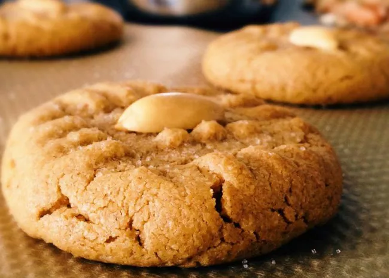

Description:
These homemade chocolate chip cookies are the perfect treat for any occasion. They're soft, chewy, and loaded with delicious chocolate chips. You'll love making and sharing them with family and friends.
Ingredients:
- 2 1/4 cups (280g) all-purpose flour
- 1/2 teaspoon baking soda
- 1 cup (2 sticks or 230g) unsalted butter, at room temperature
- 1/2 cup (100g) granulated sugar
- 1 cup (200g) brown sugar, packed
- 2 large eggs
- 2 teaspoons pure vanilla extract
- 2 cups (340g) chocolate chips
Steps:
- Preheat your oven to 350°F (180°C) and line a baking sheet with parchment paper.
- In a mixing bowl, whisk together the flour and baking soda. Set aside.
- In a separate bowl, cream the softened butter with granulated sugar and brown sugar until light and fluffy.
- Beat in the eggs one at a time, then stir in the vanilla.
- Gradually add the dry ingredients to the wet ingredients and mix until just combined. Fold in the chocolate chips.
- Drop rounded tablespoons of cookie dough onto the prepared baking sheet. Bake for 10-12 minutes or until the edges are golden but the centers are still soft.
- Cool on the baking sheet for a few minutes before transferring to a wire rack to cool completely.